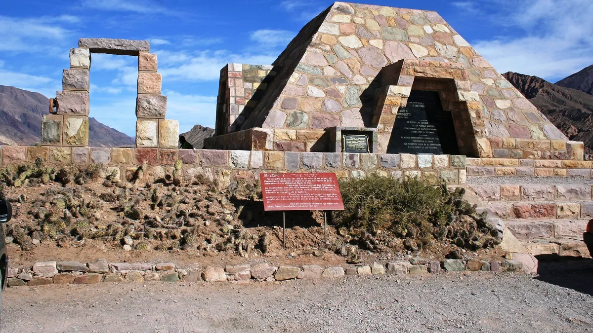

PUCARA DE TILCARA
Pucara de tilcara es un lugar muy recomendado si estas o decides visitar jujuy, podes encontrar varias y fantasticos puntos como son la GARGANTA DEL DIABLO, el JARDIN BOTANICO DE ALTURA, y el mismo CAMINO A LA GARGANTA DEL DIABLO.
SALINAS GRANDES

Otro exelente lugar que no te puedes perder son las SALINAS GRANDES, una mancha blanca de apariencia crocante y seccionada en arbitrarios hexágonos se extiende a la vera de la Ruta Nacional Nº 52, cubriendo más de doce mil hectáreas con su incandescencia.
SERRANIAS HORNOCAL

CERRO DE 7 COLORES